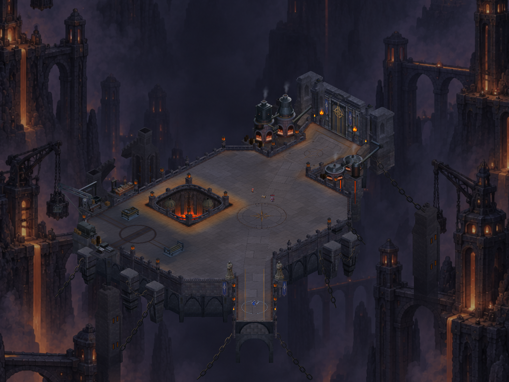

CRYPTFORGE
Taş, demir ve çalışma alanı
Kulelerin taşı, atölye donanımı ve zemin geçişleri birlikte düzenlendi.
Kule taşı, atölye malzemeleri ve zemin geçişleri doğrulandı: 1257 test geçti, Android paketi hazır. Henüz telefona yüklenmedi. Referansa yaklaşma çalışması sürüyor.

Sonra · aynı kamera ve ölçek.Bu görüntü henüz hazır değil veya yüklenemedi.
Unity karşılaştırmaları aynı sahne ve kamera kurulumuyla alınır; dövüş duraklatılır, HUD gizlenir. Referans konsept çizimidir. Bu sayfa telefon performansının veya tamamlanmış görsel kalitenin kanıtı değildir.
Kapsam, doğrulama ve kalan işler · Test ve derleme sonuçları